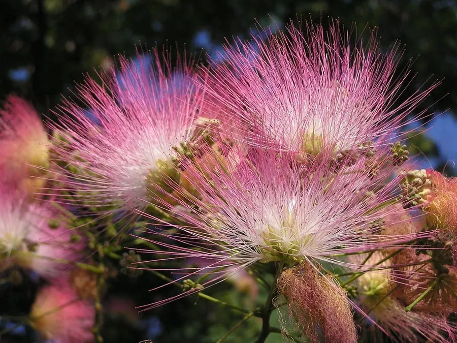

乔木 · 植物界
合欢 Albizia julibrissin

中国传统的落叶乔木，夏季开粉红色绒球状花，叶片昼开夜合，树姿优美，是庭院与行道树的常用树种。
- 分类
- 门被子植物门纲木兰纲目豆目科豆科属合欢属
- 栖息环境
- 海拔 1000 米以下的平原、山坡与庭院，喜光耐寒耐旱
- 地理分布
- 中国华东、华南、西南及华北南部，日本、朝鲜半岛、伊朗也有分布
- 保护级别
- 暂无评估；中国未列入国家重点保护野生植物名录
物种志
合欢为落叶乔木，高可达 16 m，树皮灰褐色、平滑；二回羽状复叶，小叶细小、排列整齐，叶片昼开夜合。花期 6–7 月，头状花序伞房状排列，花丝粉红色、细长如绒，聚成绒球状花序；荚果扁平、线形，成熟时褐色，内含多数种子。
合欢分布于中国华东、华南、西南及华北南部，也见于日本、朝鲜半岛、伊朗，喜光、耐寒、耐旱，适宜深厚肥沃、排水良好的土壤。夏季粉红色绒花盛开、树姿优美，是庭院、公园与行道树的常用树种；树皮与花可入药，有安神解郁之效；木材可供家具与细木工用。合欢的叶片昼开夜合，是它最有趣的特征。
形态与习性
- 株高可达 16 m，树冠开展
- 花期6–7 月，花丝粉红色
- 果期9–10 月，荚果扁平
- 光照喜光，不耐长期荫蔽
- 水分耐旱，怕积水
- 主要用途庭院与行道树、树皮花入药、家具用材
趣味知识
- 合欢的叶片白天张开、夜晚闭合，这种现象叫“睡眠运动”。
- 合欢的花丝细长如绒，聚成粉红色绒球状花序，因此又叫“绒花树”。
- 合欢树皮与花可入药，有安神解郁的功效。